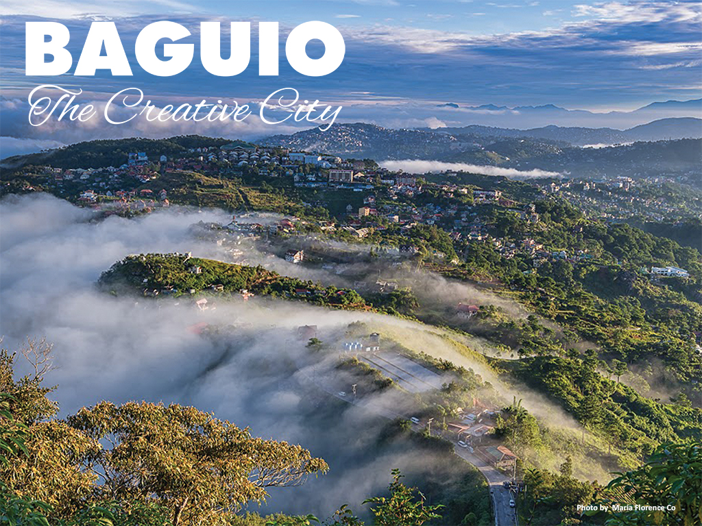
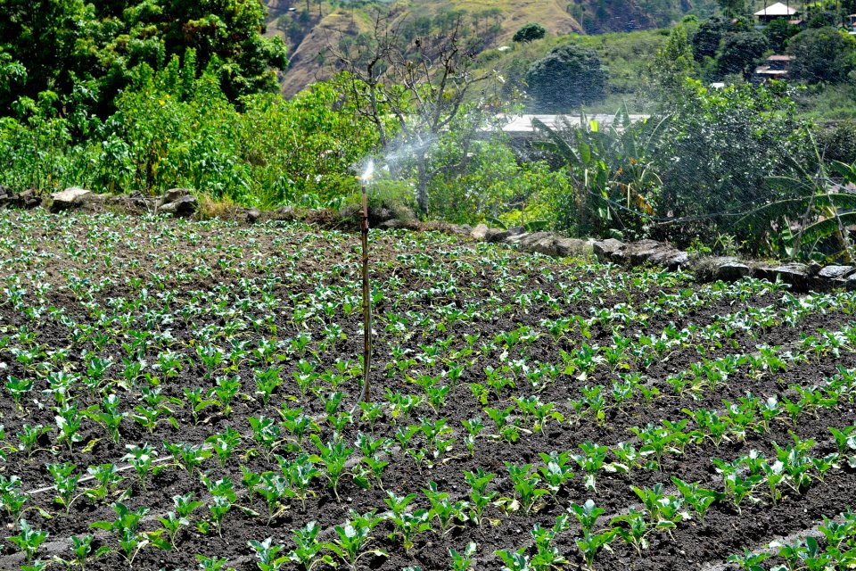

|  |
The places surrounding Baguio were first settled primarily by the Ibalois and the Kankanaeys. In the nearby town of La Trinidad, Benguet, Spaniards established a zeus or military garrison, but the Kafagway, Baguio City’s former name, was barely touched. When the American took possession of the Philippines, Baguio started to be known. Much of this American soldiers, from General to the lowest clerk would took their summer vacation at Baguio to escape the heat of summer. They then named the place as the Summer Capital of the Philippines. In year 1903 Filipino, Japanese and Chinese workers were hired to build the first road directly connecting Baguio with the lowlands of Pangasinan, the Kennon Road. |
History |
The arrival of the Americans in the early 1900s spurred development in the City. The American Governor Luke E. Wright commissioned Architect Daniel H. Burnham, a prominent Urban Planner to develop a plan for a health resort where the American soldiers and civilian employees could find respite from the sweltering lowland heat. This plan, better known as the Burnham Plan greatly altered the original mountain settlement and provided the first physical framework plan for the City. It paved the way for rapid physical development, the undertones of which are still visible up this date. The physical framework as embodied in the Burnham Plan integrates a road and park system into one. It envisioned evolving in a compact garden city for 25,000 to 30,000 people. Supporting this development plan was the enactment of a charter approved on September 1, 1909 that provided administrative as well as managerial autonomy for the city. Soon after the city’s charter was enacted, scenic Kennon Road was opened to vehicular traffic. This triggered the mining boom in surrounding areas in the early to mid 1930’s. Baguio City was the service and operations center for the mining industry, and hence a direct beneficiary of the economic growth. The events of the Second World War stalled all development, leaving the city in total devastation. Fast placed development however ensued following the war years. Such development trends transformed the city into what it is today, a premier urban center north of Manila, performing a municipality of roles, as an educational, trade, tourism and administrative center. |
Geography |
Baguio City is approximately 250 kilometers north of Manila, situated in the Province of Benguet. The area of the city is 49 square kilometers enclosed in the perimeter of 30 kilometers. The developed portion of the city corresponds to the plateau that rises to an elevation of 1,400 meters. Most of it lies in the northern half of the city. The City is landlocked within the province of Benguet, thus bounding it on all sides by its different municipalities; on the North by the capital town of La Trinidad, on the East by Itogon and to the South and West by Tuba. With City Hall as reference point, it extends 8.2 kilometers from East to West and 7.2 kilometers from North to South. It has a perimeter of 30.98 kilometers. The City has twenty administrative districts among which its barangays are divided. |
Climate |
Baguio is 8 degrees cooler on the average than any place in lowlands. When Manila sweats at 35 degrees centigrade or above, Baguio seldom exceeds 26 degrees centigrade at its warmest. Baguio is very wet during the Philippine rainy season, which is from June to October. It gets the biggest amount of rainfall in the country, twice the volume of rainfall in the country as compared to Manila. However from November to May, Baguio becomes a tropical paradise, a refreshing break from the hot and humid Philippine climate. Christmas season is when Baguio glows with the nippy winter air. In the summer month of March, April, May, Baguio lives up to its title as the “”Summer Capital of the Philippines when thousands of visitors from the lowlands and Manila take their annual exodus to the city to cool off. Casual clothing is recommended worn with jackets or sweaters in the late afternoons or evenings. |
Socio-Cultural |
Ilocano is the predominant dialect in the city. The national language, Filipino, is of course spoken by almost everyone. English is widely spoken and understood. It is the medium of instruction in all public and private schools. Most newspaper and magazines are printed in this language and the English-speaking traveler would not encounter any communication problems. Religiosity is a basic socio-cultural characteristic that makes the Filipino character distinct and unique as manifested likewise by Baguio residents. Over the years, the number of religious sects in the City has been increasing. The three most dominant are Roman Catholics to which 80.4 percent of the population belong, followed by the Episcopalian Church with 5.8 percent and the Iglesia ni Cristo with 3.5 percent membership. The remaining 10.3 percent distributed among other religious sects. |
Products and Services |
|  |
Vegetables are among the products which Baguio City is proud of. This is because a myriad of plants and fresh vegetables such as cabbages easily grow in the mild climate of the city. Aside from these, various flowers also grow in the city such as different varieties of roses, sunflowers, hydrangea, bromeliad, marigolds, impatiens, Christmas cactus and poinsettas. Food items like peanut brittle, choco flakes, lengua and strawberry and ube jams also rank among the favorites of the tourists here. These products are very affordable, ranging from 50 pesos to 200 pesos. |